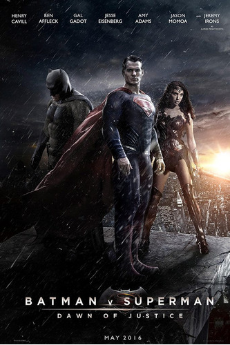

BATMAN VS SUPERMAN
CURIOSIDADES
- Ben Affleck pediu a Christian Bale qualquer conselho que ele pudesse dar sobre interpretar Batman. Bale disse-lhe para "ter em mente de que você pode ficar bravo nesse traje." Os dois atores se encontraram por acaso em uma loja de fantasias. Ambos estavam comprando fantasias de Batman para seus filhos.
- Primeira vez que a personagem Mulher Maravilha será interpretada no cinema. Anteriormente, ela só havia sido retratada em séries e filmes de animação feitos somente para a televisão.
- Depois do lançamento do último trailer, teorias sobre os estilos de luta dos herois pipocaram na internet. É consenso entre os fãs que o visual e o tom é amplamente inspirados nos jogos Arkaham, a popular série de vídeo games do Batman.